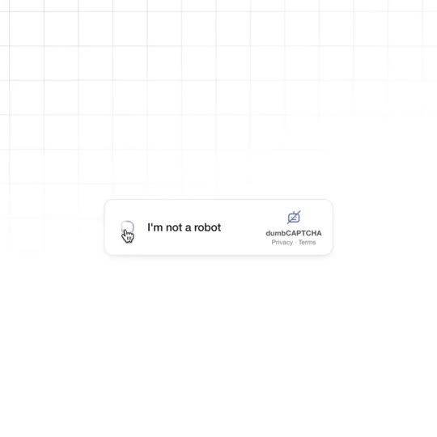
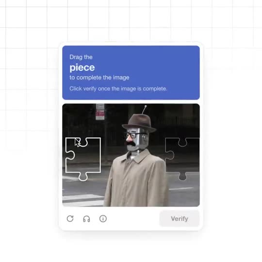
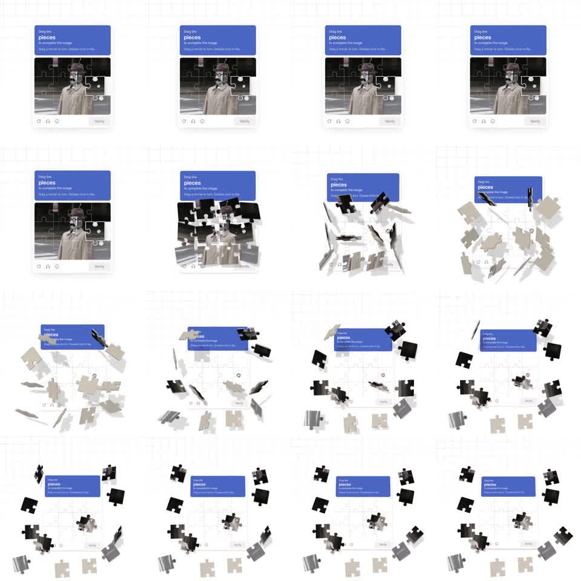
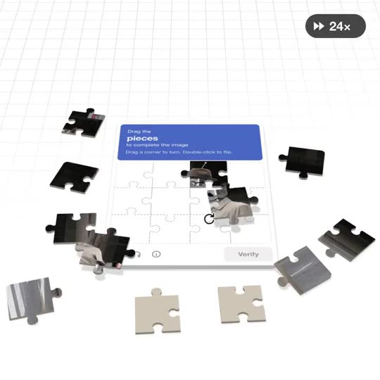
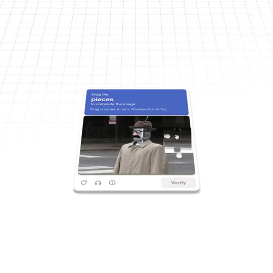
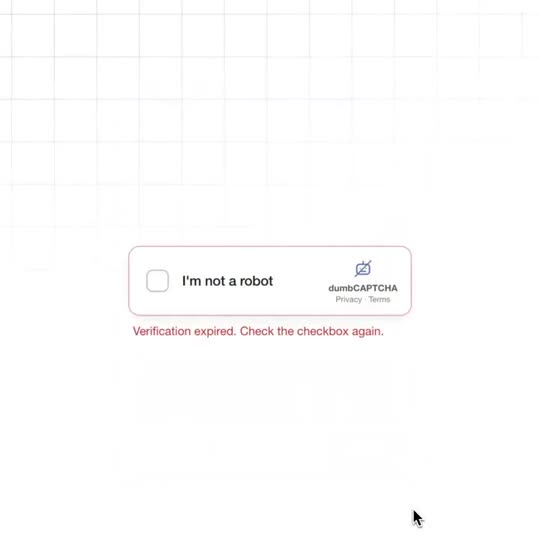

← 11-04 日报鱼知道 · 审美雷达
单条深拆 · 11-04 第 8 条
一块拼图怎么炸成 3D：jhey 的 dumbCAPTCHA 全拆
【看过视频】21 秒全片下载后完整看过，0.25 秒一帧过了一遍，爆炸段 0.05 秒一帧逐帧看。720×720 方形，60 帧。有声音轨，但音量很低，没逐帧对音。秒数是大约值；凡是写「推测」的，都是我从画面倒推的做法，不是作者公布的代码
 X
X原帖：jhey · it's just one piece, how hard can it be? ↗（需要代理）
一句话
它把一个大家都烦的东西（人机验证）照着真的样子一比一做出来，然后在第 3 秒让它「炸」成一桌有厚度、有背面的实体拼图，最后拼完了还告诉你「验证过期」。好看的底子是：平面部分做得跟真产品一样，3D 部分只在一个瞬间爆发，前后都很安静
分镜表（秒）
- 0–1.2 白底浅灰网格，中间一个仿 reCAPTCHA 的小卡片「I'm not a robot」，右边是自己画的 logo「dumbCAPTCHA」（一个划掉的拼图图标）。鼠标变成小手点下勾选框，框里转一个小加载圈
- 1.25 小卡片换成验证弹窗：蓝色标题栏「Drag the piece to complete the image」，下面一张黑白街拍照片，照片里的人是机器人脑袋、戴礼帽、粘假胡子（这就是笑点）
- 1.5–2.7 鼠标把左边一块拼图拖到右边缺口，只有一块，很正常
- 2.75–3.1 标题从「piece」悄悄变成「pieces」，说明行变成「Drag a corner to turn. Double-click to flip.」，照片上浮出整张拼图的切线。这是爆炸前的「预告」，不注意根本看不到
- 3.15–3.6 爆炸：整张照片在不到半秒里裂成约 16 块，块块往外飞、在空中翻转，同时整个弹窗从正视倒向后方，变成斜着俯看的桌面视角，背景网格变成有透视的地板
- 3.6–7 碎片落定，散在卡片周围。有的正面朝上（照片），有的反面朝上（米色纸板），每块都有厚度和投影
- 7–10.7 右上角出现黑色胶囊「▶▶ 24×」，表示快进 24 倍。鼠标一块一块拖、转、翻，拼回去
- 10.7–11.3 最后几块飞回格子里，照片拼完
- 11.3–14.5 镜头从斜俯视慢慢立回正视，同时卡片放大回原来大小，「Verify」按钮从灰色变成蓝色可点
- 14.5–16.8 停顿约 2 秒，鼠标慢慢移向 Verify
- 16.8–18.3 点下 Verify，按钮里转加载圈
- 18.4–20.8 弹窗收回小卡片，卡片边框变红，下面一行红字「Verification expired. Check the checkbox again.」，鼠标停在右下角不动，到结尾






完成度：打磨到哪一层
- 平面 UI 像真产品。卡片圆角、浅阴影、logo 下面的「Privacy · Terms」小字、底部的刷新/耳机/信息三个图标、灰色不可点的 Verify，都是真验证码该有的东西，一个没少。越像真的，后面炸开越好笑
- 文字跟着剧情改。「piece」变「pieces」，提示语变成教你转和翻，只改了一个字母和一行小字，就把「事情变大了」交代了
- 拼图有物理感。每块有厚度、有投影，背面是米色纸板，不是简单把图片切开。翻过来能看到背面，说明作者真做了双面
- 状态都有反馈。勾选框里的加载圈、Verify 从灰变蓝、点下去转圈、失败后边框变红，这一串小状态全都做了
- 剪辑上诚实。拼的过程很长，用「24×」角标快进，而不是硬剪掉，观众知道时间被压缩了，笑点（拼了半天还过期）才成立
- 结尾留白。最后 2 秒什么都不动，让「Verification expired」那行红字自己发酵
元素细节
- 背景：纯白加很浅的灰色方格，格子大约 57 像素一格（720 宽里约 12.5 格）。四周有一点淡出，中间清楚、边缘发虚。爆炸后这张网格跟着倒下变成地板，是空间感的关键
- 颜色：只有三类。白和浅灰（底、卡片）；一种偏紫的蓝（标题栏、Verify，取色约 #4A63C8，推测）；照片的黑白灰。红色只在结尾出现一次。整片没有第四种颜色
- 字体：无衬线，像系统字体（Inter 或 SF 一类，未识别）。标题栏里「Drag the」小、「piece」大且加粗，再一行小字，三级字号很清楚
- 卡片：白底，圆角约 12 像素，阴影很淡很散，几乎看不出边框
- 照片：黑白，人物居中，衣服是唯一偏暖的米色，正好和拼图背面的米色呼应（推测是有意的）
- 图标：细线条图标，粗细和文字一致；logo 是一个被斜线划掉的拼图，点题
- 光影：3D 段是柔和的顶光，每块碎片下面一块模糊灰影，影子随块的高度变大变淡，所以能看出谁飞得高
- 鼠标：用系统原生指针和小手，点勾选框时变小手，拖动时还是箭头，旋转时出现一个圆形「转」的图标
动效细节
- 节奏：前 3 秒很慢很平，3.15 秒一下爆开，0.45 秒内结束，后面又是慢。快的只占全片 2% 左右，所以那一下特别炸
- 爆炸的曲线：逐帧看，第一帧碎片就已经离开原位很远，之后越飞越慢，最后轻轻落下，没有明显的回弹。像「一开始猛、后面拖长」的缓出（ease-out），或者阻尼很大的弹簧（推测）
- 不是同时飞：碎片各自飞的方向、翻转角度、落地时间都不一样，有的先落，有的还在翻，所以不像机器
- 镜头和爆炸同时发生：弹窗往后倒成斜俯视（大约倒下 40–50 度，推测），和碎片飞出同一瞬间开始，两件事合成一个动作，观众只感觉到「世界变成 3D 了」
- 回去的时候慢：拼完后镜头立回正视用了约 3 秒，比倒下慢 6 倍。去的时候吓你，回来的时候让你喘口气
- 弹窗切换：小卡片到大弹窗、大弹窗回小卡片，都是很短的切换（0.25 秒左右），不抢戏
- 快进角标：「24×」只在拼的那几秒出现，拼完就消失
- 声音：有音轨但很轻，我没逐帧对上；画面本身不依赖声音就能看懂
为什么好看
- 先把平面做到「以假乱真」，再打破它。反差越大，3D 那一下越惊喜
- 克制：三种颜色、一个爆点、一个笑点。没有光效、没有粒子、没有音效轰炸
- 有故事：一块 → 很多块 → 拼完 → 过期。21 秒有起承转合，标题「how hard can it be?」就是在讽刺
鱼知道可以怎么用
- 讲 AI 和验证码：「AI 已经比人更会过验证码」这种选题，开头可以直接做一个一比一的验证卡片，然后让它炸开
- 讲「一个问题其实很复杂」：先给一张平平的图，说「看起来很简单」，然后炸成碎片，一块块讲，最后拼回去。比如讲大模型是怎么「看图」的，把图切成小块（图像切片）正好就是这个画面
- 「平面 → 3D → 平面」做章节转场：镜头倒下表示「我们进去看看」，立回来表示「回到结论」
- 快进角标：演示操作过程时，用一个小「×8」「×24」角标代替硬剪，诚实又有趣
用 Three.js / Remotion 复现
- 做一张平面验证卡片（Remotion 里直接用 HTML/CSS 写），照片切成 4×4 拼图形状
- 3D 部分用 @remotion/three：每块拼图用拼图轮廓的 Shape 做 ExtrudeGeometry（挤出厚度约 0.04），正面贴照片对应区域，背面和侧面用米色材质
- 给每块随机但固定的「飞出方向、高度、翻转角度、延迟」（用 Remotion 的 random(seed) 保证每次渲染一样）
- 爆炸和镜头倒下共用一个 spring，阻尼调大不回弹
- 地面网格用 GridHelper 或一张网格贴图的平面，加接触阴影（drei 的 ContactShadows）
- 拼回去用同一组参数反向插值；镜头立回来单独一个更慢的 interpolate
// 爆炸：第 189 帧(3.15s@60fps)开始，约 27 帧结束
const boom = spring({frame: frame - 189, fps,
config: {damping: 26, stiffness: 180, mass: 0.8}});
// 每块
const r = (k) => random(`p${i}-${k}`);
const d = Math.round(r('d') * 6); // 0–6 帧错峰
const t = spring({frame: frame - 189 - d, fps,
config: {damping: 26, stiffness: 180}});
pos.x = home.x + (r('x') - .5) * 3 * t;
pos.z = home.z + (r('z') - .5) * 3 * t;
pos.y = Math.sin(t * Math.PI) * (0.5 + r('y')); // 先抛高再落地
rot.x = t * (r('f') > .6 ? Math.PI : 0); // 约 4 成翻到背面
rot.z = t * (r('r') - .5) * Math.PI;
// 镜头：倒下 0.45 秒，立回 3 秒
const tilt = interpolate(frame, [189, 216, 680, 870],
[0, 0.8, 0.8, 0], {extrapolateLeft:'clamp', extrapolateRight:'clamp',
easing: Easing.out(Easing.cubic)}); // 0.8 弧度 ≈ 46°
camera.position.set(0, Math.sin(tilt) * 6, Math.cos(tilt) * 6);
camera.lookAt(0, 0, 0);参数是按画面节奏估出来的起点，不是原作代码，需要自己再微调